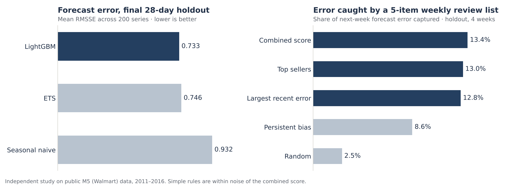
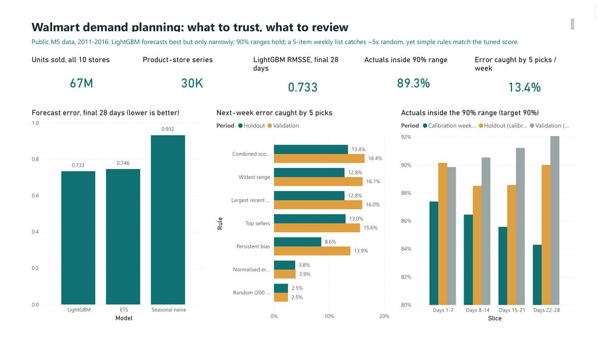
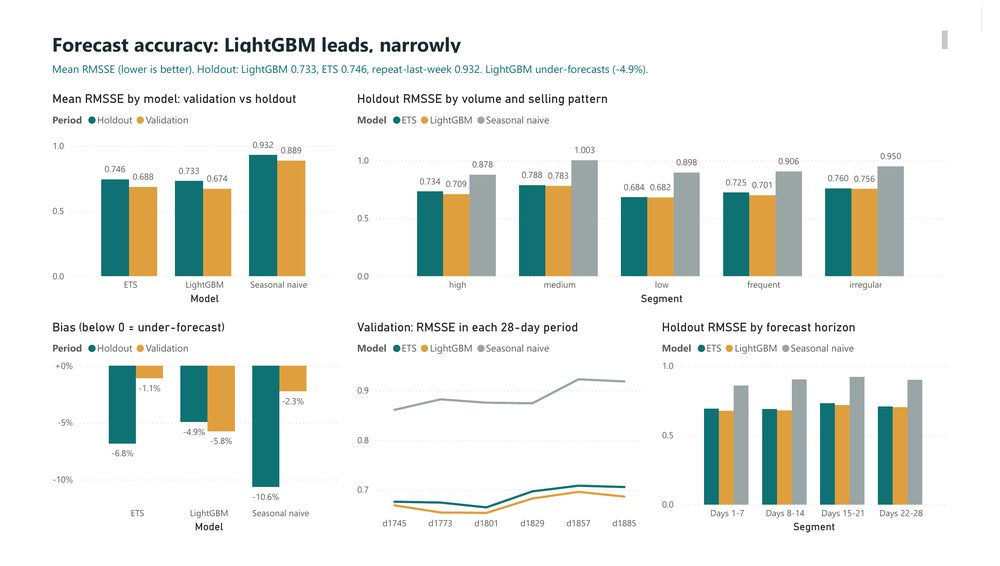
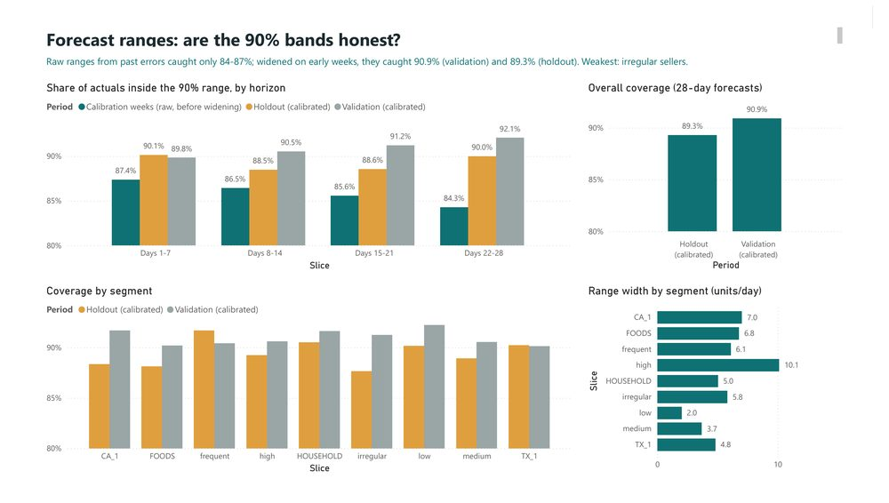
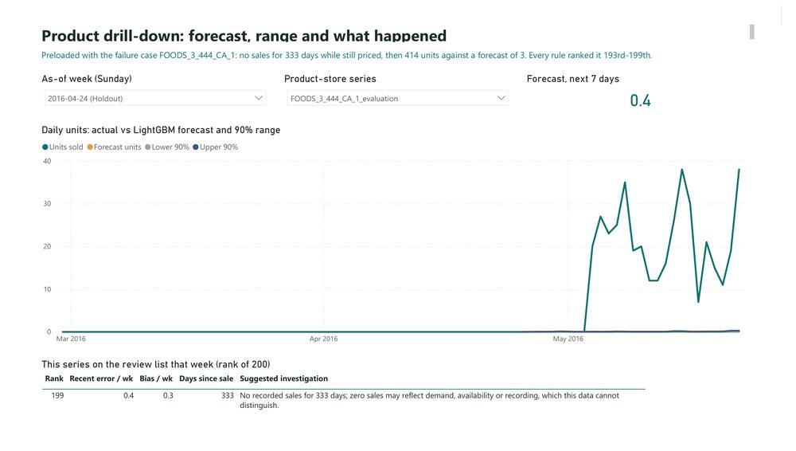

Forecast reliability and review priorities.
Which forecasts are reliable, and which five products deserve a planner’s attention each week?
Key results
- 21%lower forecast error than the seasonal-naive baseline on the final 28-day holdout (RMSSE 0.733 vs 0.932)
- 89%of holdout actuals fell inside the calibrated 90% forecast ranges
- 5×more next-week forecast error caught by a 5-item review list than by random picks

Power BI dashboard
A 10-page Power BI report built on the project’s results: 23 tables, 43 measures and every figure reconciled against the Python and SQL outputs (351/351 checks). Four of the pages are below; click any page to see it full size.




Recommendation
Use the global LightGBM forecast with ETS as a fallback. Pick the weekly review list with a simple rule: largest recent error, or top sellers. The tuned combined score I designed did not show a real advantage over those rules. Add a second short list for forecasts that are unusually bad for that item, plus a flag for active items with long zero-sales runs.
Forecast comparison
| Model | Validation RMSSE | Holdout RMSSE | Holdout WAPE | Holdout bias |
|---|---|---|---|---|
| LightGBM | 0.674 | 0.733 | 57.9% | −4.9% |
| ETS | 0.688 | 0.746 | 58.6% | −6.8% |
| Seasonal naive | 0.889 | 0.932 | 68.0% | −10.6% |
LightGBM ranked first in all six validation periods and in every holdout segment, but only by 0.002–0.025 RMSSE over ETS, which runs about 500× faster. On low-volume items the two are tied.
Weekly review list
| Rule (5 picks per week) | Validation, 35 weeks | Holdout, 4 weeks |
|---|---|---|
| Combined score (frozen) | 16.4% | 13.4% |
| Largest recent error | 16.0% | 12.8% |
| Top sellers | 15.6% | 13.0% |
| Random | 2.5% | 2.5% |
Share of next-week absolute forecast error captured. Gaps between sensible rules are about half a percentage point and change week to week. Lists ranked by units mostly pick big sellers; a list ranked by item-normalised error catches unusually bad forecasts (60% precision) but only ~4% of unit error, so the two goals need two lists.
Method
200 FOODS/HOUSEHOLD product-store series from stores CA_1 and TX_1 (388,200 daily records, reconciled in DuckDB with 26/26 audit checks). Seasonal naive, ETS and LightGBM were compared in a 60-origin weekly rolling backtest; every forecast uses only data up to its forecast date, enforced by tests. The final 28 days were sealed in code until all model and rule choices were frozen, then used once. Results were independently recomputed in SQL (0 mismatches) and presented in a 10-page Power BI dashboard.
Historical context
Monthly units sold in 2012 across the 200 product-store series.
Failure case
The largest holdout miss, FOODS_3_444_CA_1, had no recorded sales for 333 days while still priced, then sold 414 units against a forecast of 3. Every ranking rule placed it near the bottom, because error-based signals cannot see an event with no recent history. All models also under-forecast the holdout, LightGBM by 15% on low-volume items.
Limitations
No inventory, lead-time, margin or planner-override data, so stockouts, service level and cash impact cannot be measured. Recorded sales may understate demand. Two stores, two categories, no sparse or new items; the holdout is 28 days. Panel RMSSE is not the official M5 WRMSSE.